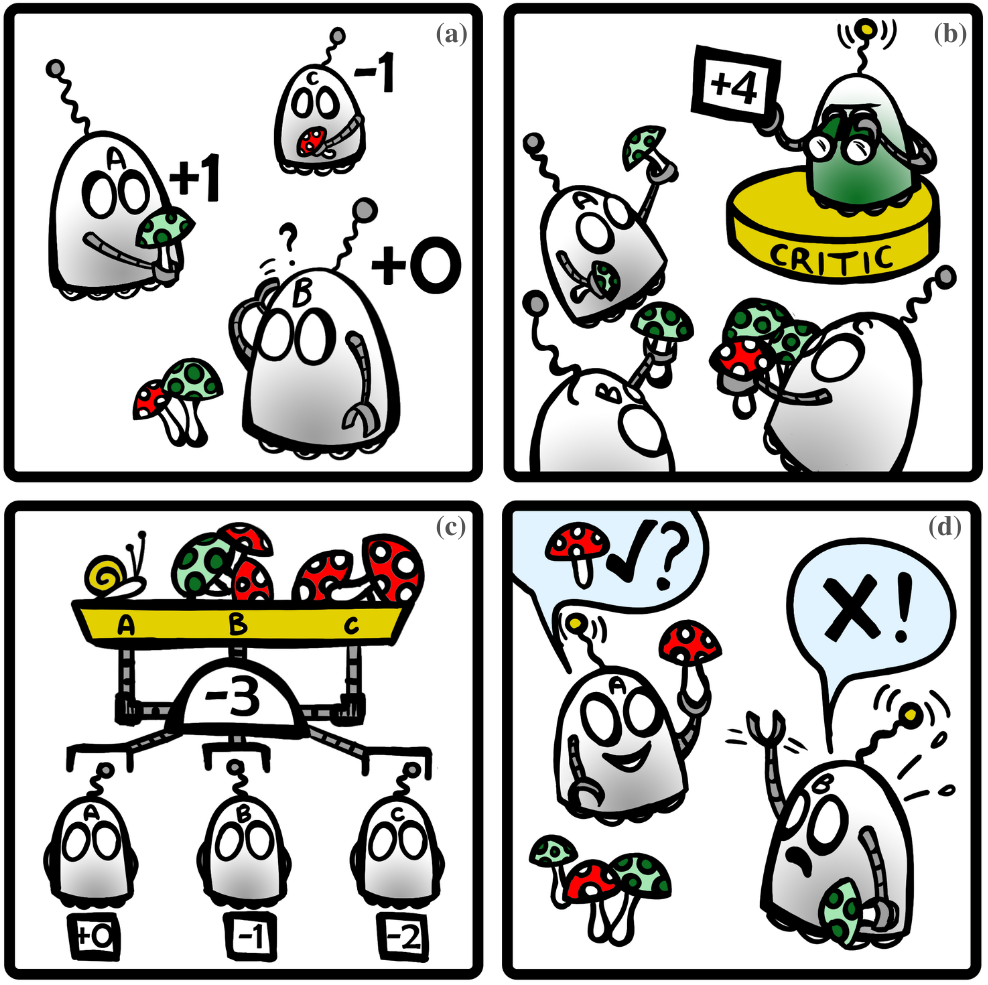

Recent advances in sensing, actuation, and computation have opened the door to multi-robot systems consisting of hundreds/thousands of robots. Decentralized MRS face fundamental challenges, such as non-stationarity and partial observability. The community has leveraged model-free multi-agent reinforcement learning (MARL) to devise efficient, scalable controllers for multi-robotic systems (MRS) The community is looking to machine learning methods – such as machine learning – to cope with the complexity of coordinating robots.
 The survey looks at multi-agent reinforcement learn-ing (MARL) to devise controllers for multi-robot systems. They discuss the challenges associated with MARL and MRS, such as stationarity during training and partial observability. They also detail the main research directions that have been pro-posed recently to tackle these challenges and improve agent cooperation. They report relevant approaches to decentralized multi-processor learning, namely independent learning, centralized critic, value decomposition, and com-uvemunication learning methods.
The goal of an agent is to learn an optimal decision strategy, more commonly referred to as a policy, π∗ : S → A, which produces a distri-uctivebution over possible actions in each state. The value-based methods aim to estimate the opti-centricmal policy’s corresponding state value function. Value-based and policy-based approaches to learning an optimal policy are different ways to learn the value of an optimal strategy, such as value--based or policy-driven methods.
This work focuses on robot teams in both cooperative and mixed cooperative-competitive settings. In competitive settings, agents receive and try to maximize their own local rewards, which are often conflicting in nature to other agents. Centralized learning models the multi-agent as a single agent and aims to learn a joint action from the joint observations of all agents. Centralized methods operate on the assumption that information can be centralized, both during training and execution, something which is often not achievable in practice. In independent learning, each agent independentlylearns its own observa-tion while considering other agents as a part of the environment.
Decentralized Execution (CTDE) aims to get the best of both centralized and independent learning paradigms. Independent learners forgo Markov property and learn in an environment that is inherently non-stationary due to the changing policies of other agents. In contrast to central-centricized learning, independent learners have limited observationalability and are unable to enjoy any gains from information centralization. The CTDE paradigm aims to allow agents to learn in a centralized setting. It is
The multi-agent environment is inherently non-stationary due to the changing policies of other agents who are also learning at the same time. Scalability is a multi-faceted challenge, which both encompasses training policies that can scale, i.e., and algorithms that can handle the training of large teams, with-upon a considerable effect on performance and cost. The work primarily focuses on the CTDE (CTDE) but also discusses independent (independent)learning in some detail.
This section reviews the main representative cooperationalgorithms in this section. Independent Learners learn their own policy based on their own observations or their shared interests. CTDE-based algorithms have the most potential to further mature and/or increase scalability by incorporating techniques such as parameter sharing In real-world applications, cost and charac-teristics of robot sensors can considerably restrict the information available to a robot. Scalability remains one of the hardest challenges in communication, where larger team sizes can see agents overwhelmed with messages.
Recent independent learning works have focused on developing methods that address non-stationarity in MARL environments. This is particularly significant in fully cooperative set-sets where agents receive a joint team reward. Lauer et al. introduced an optimistic Q-Learning algorithm, which only updates Q-values when there is a guaranteed improvement and ignores the fact that an agent’s action being individually-optimal is not enough to ensure team-level optimality [27
There is a spectrum of independent Q-Learning methods ranging from totally optimistic to totally optimistic, modestly optimistic and vanilla Q-Learn methods. Centralized Critic can provide an accurate cooperative baseline by relying on augmented state and policy information from all agents. In order to stabilize train-ing and efficiently reuse data, these algorithms maintain a buffer which stores past environment-transitions. The CTDE paradigm has made it possible to train agents in a centralized manner allowing the development of methods that reduce non-stationarity and better credit assignment.
In fully-cooperative settings with a single joint reward, it is often sufficient to have a single centralized critic for all the agents. In competitive and mixed-reward environments with local rewards, each agent might be required to train its own critic. Centralization of informa-problems during training can help alleviate non-stationarity faced by independent learners. The end-to-the-end framework allows for credit to be distributed from the centralized head to the indi-uctive learners, thus allowing for effective learning in joint reward settings.
The challenge in communication learning is learned message generation. Table 2 summarizes the communication learning algorithms reviewed in this paper. Messages are generated in one of two ways by feeding each agent’ information into a message genera-generation module, or by allowing agents to share their poli-centriccies/actions (or intent) with each others, further boosting cooperation. Table 2 summarises the algorithms reviewedin this paper. The authors conclude that this is the best way
Each agent is trained to process a ”message” (or a ‘message’) passed among agents (following a given topology/topologies) The generation of these messages can be trained in two ways either via reinforced or differentiable communication learning Reinforced commu-generation learning implicitly trains message genera-heticaltion using the agent’s own reward signal. Difined communication learning (DCL) explicitly teaches message generation by backpropagating the message gradients from the recipient agent(s)
They discuss AI benchmarks and real-world robotic tasks used to assess the performance of cooperative multi-agent/robot teams. These benchmarks allow us to test aspects of cooperation in controlled envi-ronments. In contrast, ver-forming MARL models on real robots in realistic scenarios helps to test the entire set of capabilities required for deployments, such as scalability and robustness to sensing/actuation noise. More recent work have proposed to teach agents to minimize the amount of information shared at every time
They discuss cooperative, mixed cooperative-competitive, communication learning and communication learning benchmarks. The most popular benchmarks for cooperative set-tings are the StarCraft II Multi-Agent Challenge (SMAC) and the multi-agent particle environ-like environments They discuss AI Cooperation Benchmarks and mixed cooperative and competitive benchmarks. These benchmarks focus on scenarios that threaten the stability of purely-cooperative tasks, allowing us to test if agents will be able to cooperate, even in situations where their individual rewards motivates them to act in a way that might be detrimental to the collective good.
The main benchmarks look at sequential social dilemmas, such as the common pool resource dilemma, and the public goods dilemma in Cleanup and Harvest. In Cleanup, agents gain reward from consuming apples, which only regrow when the river is clean from waste. In Harvest, apples regrow based on how many apples are nearby. Agents need to limit their desire to consume as many apples as they can, to help maximize the regrowth rate and maximize the overall team return.
The main benchmarks are negotiation tasks, where two agents with hidden utility functions have to split a randomly initiated item pool by making succesful proposals until both agents agree These tasks can be used to examine the conditions required for agents to learn to reach a consensus through sequential communications. The main benchmark is negotiation tasks where agents must agree to split items in order to reach consensus and agree to share a pool of items, such as RoboS
Multi-robotpath/motion planning has become one of the most important and widely used tasks to evaluate the performance of deep RL methods for MRS. The hope is that the learned capabilities needed for cooperation in multi-roob path/mo-centric planning planning will further extended to other, more general multi-robotic tasks. Recent developments in robot motion control, it has become easier to verify the behavior of the deep RL algorithms on real robots. Imitation learning has also been combined with deep RL to achieve bet-henyter performance and sample efficiency.
Safe MARL is defined as training an agent to learn an efficient policy, while minimizing violations of safety constraints. Safety guarantees need to be guaranteed when deploying the final-learned policies, and sometimes even during train-induced training. The community is still in the early phases of transitioning from safe single-agent RL to safe MARL. Training in the real world is often costly, time-consuming, and dangerous or infeasible. They believe model-based MARL may be one of the frontiers for MARL research.
Model-based model-basedMARL comes with a number of new challenges. Agents need to learn the dynamics of an environment containing other agents. The holy grail of com-gianmunication learning remains methods that can allow agents to consensually generate joint plans from communications. Advanced commu-centricications between agents may allow the team to reach centralized performances, while remaining decentralized. The team will most likely need to di-likely need to use relevant infor-heticalmation in the team (including current knowledge of the team and future intent/predictions)